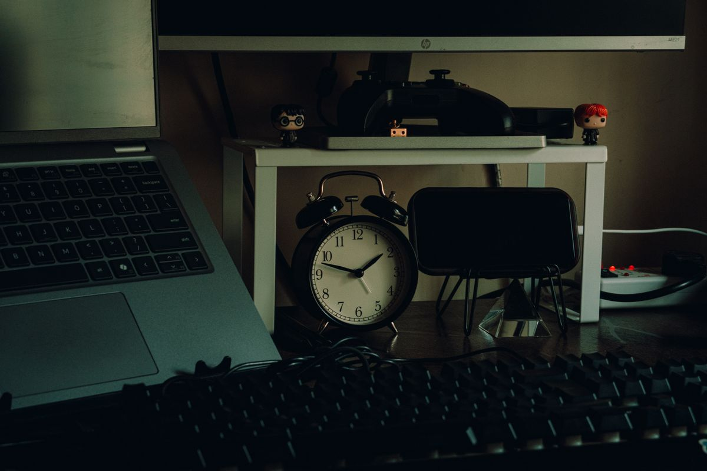
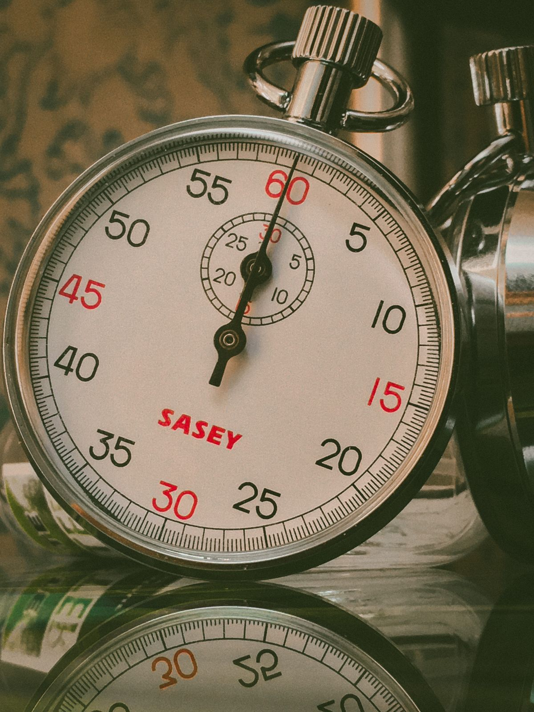
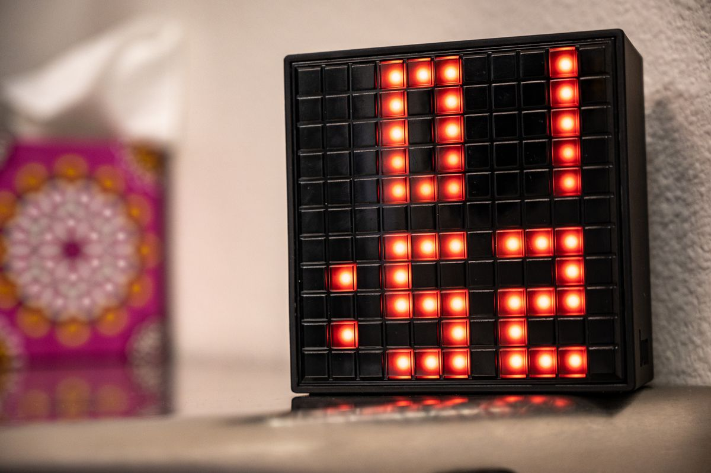
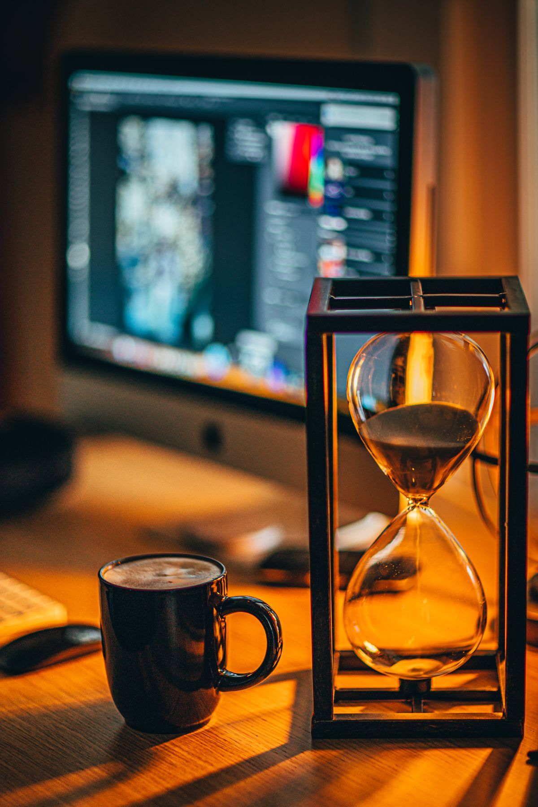

นาฬิกาโฟกัส Pomodoro Timer อุปกรณ์เล็กที่ช่วยให้ทำงานมีสมาธิและไม่หมดไฟ 2026
Focus Timer หรือ Pomodoro Timer ตัวเล็กบนโต๊ะทำงาน ช่วยเพิ่มสมาธิและวินัยในการทำงานได้จริง รวมตัวเลือกยอดนิยม พร้อมเกณฑ์การเลือกซื้อ ซื้อผ่าน Shopee
อัปเดต กรกฎาคม 2026
หลายคนที่ทำงานหน้าจอทั้งวันคงเคยรู้สึกว่าเวลาผ่านไปเร็วมากโดยที่งานไม่คืบหน้าเท่าที่ควร สลับไปดูมือถือบ้าง เปิดแชทตอบเพื่อนร่วมงานบ้าง กว่าจะรู้ตัวอีกทีก็หมดวันไปแล้ว หนึ่งในเทคนิคที่ได้รับความนิยมในการแก้ปัญหานี้คือเทคนิค Pomodoro ซึ่งแบ่งเวลาทำงานเป็นช่วงสั้น ๆ สลับกับการพักเบรก และอุปกรณ์ที่ช่วยให้เทคนิคนี้ใช้งานได้ผลจริงคือ Focus Timer หรือ Pomodoro Timer ตัวเล็ก ๆ ที่วางไว้บนโต๊ะทำงาน บทความนี้จะพาไปดูว่าทำไมอุปกรณ์นี้ถึงช่วยเพิ่ม productivity ได้จริง และมีตัวเลือกแบบไหนบ้าง
Pomodoro Timer คืออะไร ทำไมถึงช่วยให้ทำงานได้ดีขึ้น
เทคนิค Pomodoro คือการแบ่งเวลาทำงานเป็นช่วงละ 25 นาที แล้วพัก 5 นาที ทำวนแบบนี้ไปเรื่อย ๆ จนครบรอบใหญ่แล้วจึงพักยาวขึ้น หลักการนี้ช่วยให้สมองไม่ล้าเกินไป และสร้างแรงกดดันเชิงบวกที่ทำให้อยากทำงานให้เสร็จภายในเวลาที่กำหนด ต่างจากการตั้งเวลาด้วยมือถือซึ่งมักถูกรบกวนด้วยการแจ้งเตือนแอปอื่น ๆ อุปกรณ์ Focus Timer แบบตั้งโต๊ะจึงถูกออกแบบมาให้ใช้งานเฉพาะทาง ไม่มีสิ่งรบกวน กดปุ่มเดียวก็เริ่มจับเวลาได้ทันที
การมีตัวจับเวลาที่จับต้องได้วางอยู่บนโต๊ะยังช่วยสร้าง "สัญญาณภาพ" ที่มองเห็นเวลาที่เหลือได้ชัดเจน ต่างจากการดูตัวเลขนามธรรมบนหน้าจอ ทำให้รู้สึกถึงความคืบหน้าของงานได้ดีกว่า และยังช่วยฝึกวินัยในการจัดสรรเวลาทำงานในระยะยาวอีกด้วย
ประเภทของ Focus Timer ที่มีในท้องตลาด
Focus Timer มีตั้งแต่แบบกลไกหมุนธรรมดาที่ไม่ต้องใช้ไฟฟ้า ไปจนถึงแบบดิจิทัลที่ตั้งโปรแกรมรอบเวลาได้เอง บางรุ่นออกแบบมาเป็นลูกบาศก์ที่แค่พลิกด้านก็เปลี่ยนโหมดเวลา บางรุ่นมีไฟ LED บอกสถานะว่าอยู่ช่วงทำงานหรือช่วงพัก การเลือกจึงขึ้นอยู่กับสไตล์การทำงานและความชอบส่วนตัว
ตัวเลือก Focus Timer ที่น่าสนใจสำหรับโต๊ะทำงาน

1. นาฬิกาจับเวลา Pomodoro แบบหมุนกลไก (Mechanical Timer)
ไม่ต้องใช้แบตเตอรี่หรือชาร์จไฟ แค่หมุนตั้งเวลาก็ใช้งานได้ทันที เสียงติ๊กเบา ๆ ระหว่างจับเวลาช่วยสร้างความรู้สึกกดดันเชิงบวกที่ทำให้อยากทำงานให้เสร็จก่อนเวลาหมด เหมาะกับคนที่ชอบความเรียบง่ายไม่ยุ่งยาก นาฬิกาจับเวลา Pomodoro แบบหมุนกลไก (Mechanical Timer)
2. Focus Timer แบบลูกบาศก์พลิกเปลี่ยนโหมด (Time Cube)
ออกแบบเป็นลูกบาศก์ที่แต่ละด้านตั้งค่าเวลาไว้ต่างกัน เช่น 25 นาที 5 นาที หรือ 15 นาที แค่พลิกด้านที่ต้องการก็เริ่มจับเวลาทันที เหมาะกับคนที่อยากสลับโหมดทำงาน-พักได้เร็วโดยไม่ต้องกดปุ่มหลายครั้ง Focus Timer แบบลูกบาศก์พลิกเปลี่ยนโหมด (Time Cube)

3. Focus Timer ดิจิทัลพร้อมไฟ LED บอกสถานะ
รุ่นนี้มีจอแสดงผลตัวเลขชัดเจน พร้อมไฟสีบอกว่ากำลังอยู่ช่วงทำงานหรือช่วงพัก เหมาะกับคนที่ทำงานเป็นทีมในห้องเดียวกัน เพราะเพื่อนร่วมงานสามารถมองเห็นสถานะได้จากระยะไกลโดยไม่ต้องถามว่ากำลังยุ่งอยู่หรือไม่ Focus Timer ดิจิทัลพร้อมไฟ LED บอกสถานะ

4. นาฬิกาทรายจับเวลา (Sand Timer) สำหรับโฟกัสงานสั้น
เหมาะกับงานที่ต้องการโฟกัสสั้น ๆ เช่น การตอบอีเมลหรือประชุมย่อย ดีไซน์คลาสสิกยังช่วยเพิ่มความสวยงามให้กับโต๊ะทำงานได้ในตัว นาฬิกาทรายจับเวลา (Sand Timer) สำหรับโฟกัสงานสั้น
เกณฑ์การเลือกซื้อ Focus Timer
รูปแบบการใช้งานที่ถนัด หากไม่ชอบอุปกรณ์อิเล็กทรอนิกส์ที่ต้องชาร์จไฟบ่อย ตัวเลือกแบบกลไกหรือนาฬิกาทรายอาจตอบโจทย์มากกว่า ส่วนคนที่ชอบความแม่นยำและอยากปรับเวลาได้หลากหลาย ควรเลือกแบบดิจิทัล
ระดับเสียงและการแจ้งเตือน บางรุ่นมีเสียงติ๊กหรือเสียงเตือนเมื่อครบเวลา ควรเลือกให้เหมาะกับสภาพแวดล้อมการทำงาน เช่น หากอยู่ในออฟฟิศที่ต้องเงียบ ควรเลือกรุ่นที่ปิดเสียงได้หรือใช้ไฟกะพริบแทน
ขนาดและพื้นที่วาง เนื่องจากเป็นอุปกรณ์ที่ต้องมองเห็นได้ง่ายตลอดเวลา ควรเลือกขนาดที่พอดีกับพื้นที่โต๊ะ ไม่เล็กจนมองไม่เห็น และไม่ใหญ่จนเกะกะพื้นที่ทำงาน
ความสามารถในการปรับแต่งรอบเวลา บางงานอาจต้องการรอบทำงานที่ยาวหรือสั้นกว่ามาตรฐาน 25 นาที ควรเลือกรุ่นที่ปรับตั้งเวลาได้ตามต้องการ
สรุป
Focus Timer หรือ Pomodoro Timer เป็นอุปกรณ์เล็ก ๆ ที่ราคาไม่แพง แต่ส่งผลต่อวินัยและสมาธิในการทำงานได้มากกว่าที่คิด การมีตัวจับเวลาที่จับต้องได้วางอยู่บนโต๊ะช่วยลดการพึ่งพาการแจ้งเตือนจากมือถือที่มักพาไปสู่การเสียสมาธิ เลือกรุ่นที่เข้ากับสไตล์การทำงานของตัวเอง แล้วจะพบว่าการแบ่งเวลาทำงานเป็นช่วงสั้น ๆ ช่วยให้ทำงานเสร็จเร็วขึ้นโดยไม่รู้สึกเหนื่อยล้าเกินไป
บทความนี้มีลิงก์ affiliate เมื่อคุณซื้อผ่านลิงก์ เราอาจได้รับค่าคอมมิชชั่นโดยที่คุณไม่ต้องจ่ายเพิ่ม